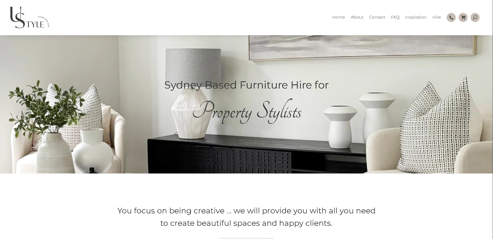
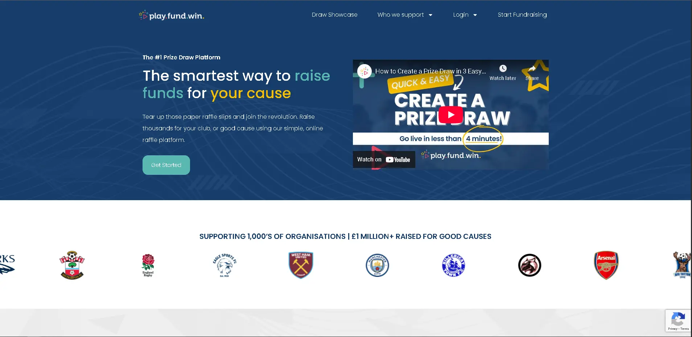
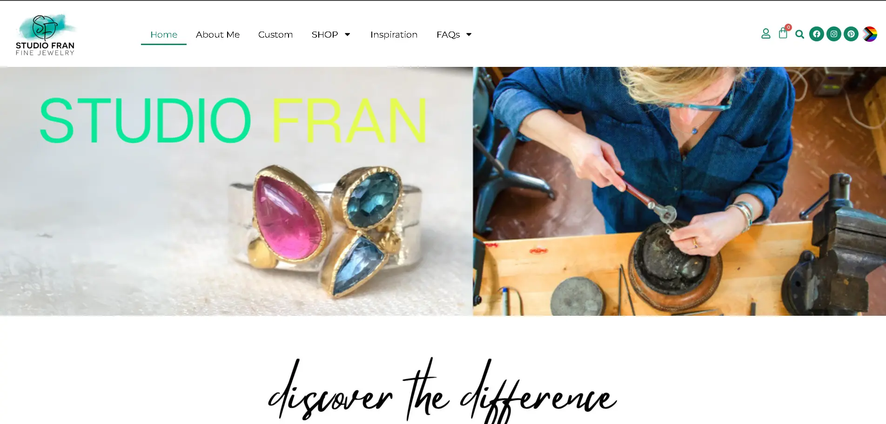
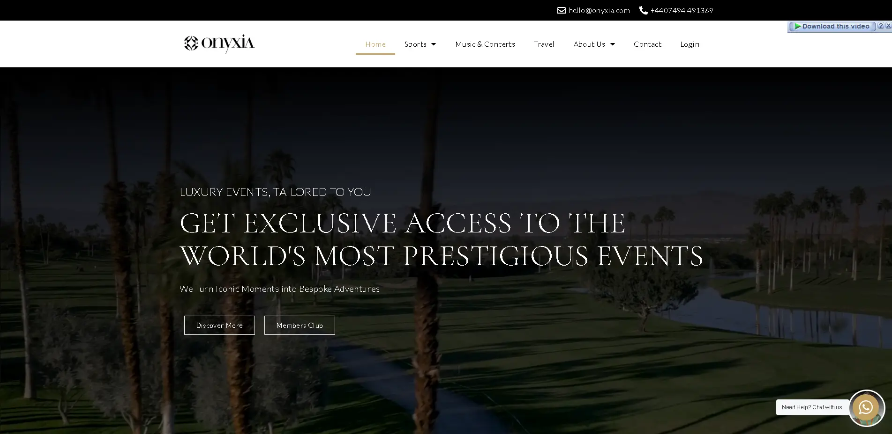

Commerce · Furniture hire
Ustyle
A polished retail experience pairing visual storytelling with a practical WooCommerce catalogue and enquiry flow.
Visit live siteAvailable for remote opportunities
I’m Sanjo, a web developer with 10+ years of experience building, customising, and maintaining reliable websites for businesses and agencies across the US, Europe, and Australia.
Selected work
A selection of commerce, service, hospitality, and platform projects delivered across different WordPress stacks and front-end systems.

Commerce · Furniture hire
A polished retail experience pairing visual storytelling with a practical WooCommerce catalogue and enquiry flow.
Visit live site
Platform · Fundraising
A responsive fundraising and raffle platform shaped around clear participation and campaign discovery.
Visit live site
Portfolio · Interior design
An editorial portfolio that lets project imagery lead while keeping navigation and content effortless.
Visit live site
Platform · Ticketing
A focused ticketing experience that balances event discovery, content, and conversion across devices.
Visit live siteExpertise
From a supplied design to launch, maintenance, and troubleshooting, I work across the layers that keep a website useful and dependable.
Custom themes and plugins, child themes, ACF content systems, WooCommerce extensions, migrations, maintenance, and deep conflict debugging.
Responsive, accessible, cross-browser builds translated carefully from Figma, XD, or PSD—from custom code to established builder ecosystems.
Performance optimisation, on-page SEO, landing pages, SSL, DNS, domains, hosting, business email, and client-facing technical support.
I use AI as an engineering accelerator for debugging, code review, refactoring, rapid prototyping, workflow automation, and faster troubleshooting—always paired with hands-on technical judgment.
Experienced across major WordPress ecosystems
Experience
Hands-on development across agencies, studios, and direct client work—from first build to the fixes that matter after launch.
Read the full résuméSelf-employed · Remote
End-to-end WordPress delivery for clients in the US, Europe, and Australia, including custom development, WooCommerce, performance, SEO, hosting, and ongoing troubleshooting.
Impressence Web Studios
Built and maintained responsive WordPress sites across Elementor, WPBakery, Divi, Beaver Builder, and Avada, while resolving complex live-site conflicts.
Useradd Today
Delivered PHP and WordPress websites, customised themes and plugins, and supported a varied client base with continuous updates and fixes.
Pix and Codes · Philippines
Converted supplied PSDs into WordPress and WooCommerce websites, working across custom themes, plugins, page builders, DNS, and hosting.
Xposure Media · Philippines
Built responsive websites and pages with the company’s in-house PHP framework using HTML, CSS, JavaScript, and jQuery.
Let’s work together
I’m available for remote freelance work, ongoing website support, and development roles with teams that care about quality and dependable delivery.
sanjomaru13@gmail.com